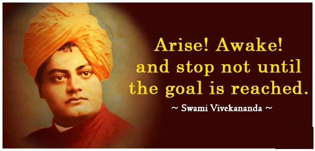

Swami Vivekananda
Inspiration of Youths
✨Here's a time line of vivekananda's life

- 1863 - Born in Calcutta, India on 12 January 1863 and named as Narendranath Datta.
- 1884 - Completed his Bachelors with this honourific words from his Principal, "Narendra is really a genius. I have travelled far and wide but I have never come across a lad of his talents and possibilities, even in German universities, among philosophical students. He is bound to make his mark in life".
- 1885 - After the death of his dad, Narendra gradually grew ready to renounce everything for the sake of realising God, and accepted Ramakrishna as his Guru.
- 1886 - Narendra took the name Swami Vivekananda and asked my Ramakrishna to be the leader of his disciples.
- 1893 - Influenced the Parliament of Religions with his oration.
- 1897 - Founded the Ramakrishna Mission for social service.
- 1897 - Died at the age of 39.
🌟Sayings of Swami Vivekananda
✰ In a day when you don't come across any problems—you can be sure that you are traveling in the wrong path.
✰ Take up an idea, devote yourself to it, struggle on in patience, and the sun will rise for you.
✰ Are great things ever done smoothly? Time, patience, and indomitable will must show.
✰ Knowledge can only be got in one way, the way of experience; there is no other way to know.
✰ Work on with the intrepidity of a lion but at the same time with the tenderness of a flower.